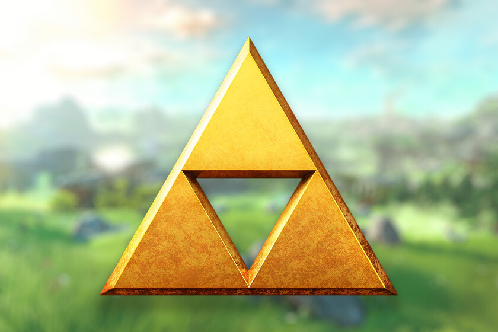

 Entre las leyendas que nos llegan del pasado remoto, hay una que dice así: «Hace mucho tiempo existió un reino que ocultaba el poder dorado de los dioses. Era un lugar hermoso, de verdes bosques y enormes montañas, donde reinaba la paz. Pero un día fue presa de la ambición de un villano que le arrebató el poder dorado. El reino cayó en las tinieblas. Y cuando el pueblo había perdido casi toda esperanza... apareció como de la nada un joven vestido con ropas verdes. Con su misteriosa espada, el joven sepultó al villano y le devolvió al reino la luz. Como venía de otra época, el pueblo le llamó 'Héroe del Tiempo'. Muchos años después, cuando la historia del joven se había convertido en leyenda, en el reino volvieron a soplar vientos de tragedia... El villano que el héroe había sepultado resurgió de las profundidades de la tierra. El pueblo confiaba en que el Héroe del Tiempo volvería a salvar el reino... Pero el héroe no apareció. El pueblo, indefenso ante ese enorme poder, solo podía rezar... y encomendar su destino a los dioses...». ¿Qué habrá sido de aquel reino de la leyenda? Nadie lo sabe... Aunque su recuerdo se ha borrado, la leyenda aun se respira en el viento. En una remota isla, cuando los hijos varones llegan a cierta edad, lo celebran vistiéndoles con ropas verdes para que se conviertan en hombres valientes como aquel héroe de la leyenda. Aquel cuyo corazón vestía el viento verde de la pradera y cuya espada era un torbellino que disipaba las tinieblas.